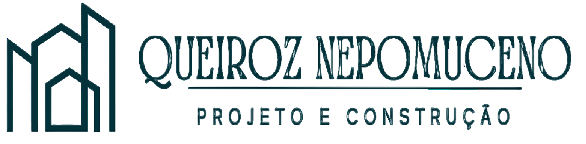
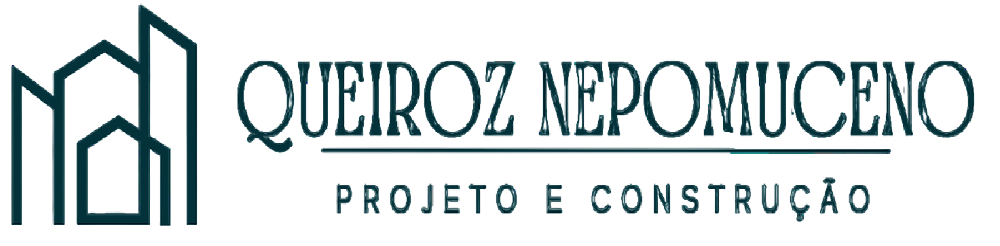
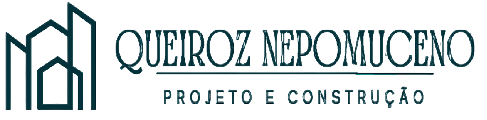
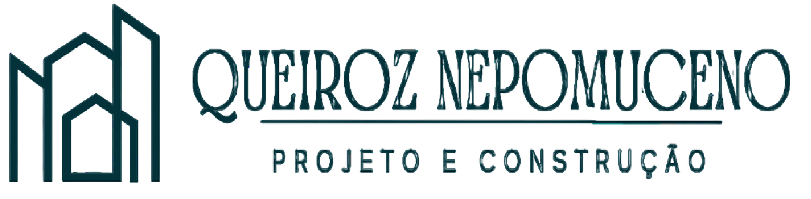

Nossa equipe de engenheiros possui experiência na execução e fiscalização de obras comerciais, industriais, residenciais e de infraestrutura. A empresa possui profissionais especializados nos diversos métodos construtivos. Nossas reformas destacam-se pela produção e qualidade no serviço, em especial na execução de pintura, piso vinílico, carpetes, forro (drywall, mineral e de gesso com película de pvc) e paredes de drywall.


Reforma de fachada (Antes e Depois) - Caruaru - PE


Execução de Pintura (Igarassu - PE)


Execução de estrutura com placas de drywall - UNILEVER Igarassu - PE


Execução de forro de gesso com película de PVC - UNILEVER Igarassu - PE
Reforma de suíte do casal e closet - Igarassu- PE


Instalação de piso vinílico em régua no quarto e closet


Execução de Painel Ripado no quarto do casal
Reforma de suíte do casal e closet - Igarassu- PE


Banheiro da suíte do casal


Projeto de estrutura metálica - Telhado Clínica Ninho (Recife/PE)
Projeto de edifício comercial e residencial (Vertentes/PE)
Projeto de reforço de telhado de madeira (Prefeitura Sta. Maria do Cambucá/PE)

Hospital Municipal em Abreu e Lima (PE) - Coordenado pela Urbana Arquitetura

Projeto de drenagem urbana para o loteamento Três Lagoas (Garanhuns/PE)
Fundada em 2022, mas reunindo profissionais com experiência sólida em projetos e serviços de engenharia, a Queiroz Nepomuceno Projeto e Construção tem atuado em atividades que vão desde o pensar na solução até a realização da visão do nosso cliente com o compromisso de fornecer soluções inovadoras e eficientes que atendam as suas necessidades e expectativas. Nossa missão é entregar produtos de qualidade, entregando projetos completos, obras diferenciadas, que combinam precisão técnica, criatividade e sustentabilidade. Nós nos dedicamos a criar estruturas duráveis e funcionais, respeitando prazos e orçamentos, sem comprometer a excelência.
Nossa visão é nos tornarmos líderes no setor de engenharia de projetos, reconhecidos por nossa integridade, inovação e competência. Valorizamos a confiança que nossos clientes depositam em nós e nos esforçamos para superar suas expectativas em cada projeto. Com uma equipe de profissionais diferenciados e comprometidos, estamos prontos para enfrentar qualquer desafio e proporcionar resultados que fazem a diferença. Se você procura uma empresa de engenharia que alia experiência, dedicação e qualidade, a Queiroz Nepomuceno é a escolha certa.

Engenheiro Civil, Mestrado em Engenharia Civil e Ambiental com foco em Recursos Hídricos,Especialista em Projeto e Construção de Estruturas de Aço e Madeira. Já com quase uma década de experiência, Edmilton Queiroz é um profissional qualificado e dedicado na área de engenharia civil. Durante sua carreira, ele elaborou projetos completos para edifícios de até 4 pavimentos e desenvolveu mais de 175 hectares de projetos de abastecimento. Sua expertise abrange desde a criação de projetos complementares para edificações, como casas do padrão Minha Casa Minha Vida, até hospitais com mais de 1200 metros quadrados de área de projeto. Edmilton é conhecido por sua habilidade em atender projetos complexos, garantindo eficiência, qualidade e conformidade com as normas técnicas. Sua dedicação e conhecimento técnico têm sido fundamentais para o sucesso dos projetos que lidera, assegurando sempre a satisfação dos clientes e a excelência dos resultados.

Engenheira Civil, com experiência em obras desde 2013 Experiência: Priscyla Nepomuceno é uma engenheira civil com uma carreira sólida e diversificada, atuando na área de obras desde 2013. , Priscyla possui uma vasta experiência prática que inclui trabalhos em obras privadas de grandes edifícios verticais, acompanhando todas as fases, desde a fundação até o acabamento. Após sua experiência inicial no setor privado, Priscyla migrou para a área de obras públicas, onde atuou como fiscal durante um ano antes de se tornar engenheira em empresas prestadoras de serviços para prefeituras. Nessa função, foi a responsável técnica pela construção e manutenção de diversas escolas e creches, demonstrando sua habilidade em gerenciar projetos de infraestrutura pública. Com mais de 10 anos de experiência no planejamento, acompanhamento e gerenciamento de obras, Priscyla possui uma competência diferenciada tanto em projetos verticais quanto horizontais. Sua dedicação e capacidade de liderança garantem que cada projeto seja concluído com excelência, dentro dos prazos e orçamentos estipulados.
Caroline Nepomuceno é uma engenheira civil dedicada, com uma formação acadêmica recente, mas uma sólida experiência prática em obras iniciada em 2018. Caroline começou sua carreira atuando na fiscalização de obras públicas de infraestrutura, onde lidou com projetos de pavimentação, redes de esgotamento sanitário e estações de tratamento de esgoto. Sua atuação incluiu a supervisão da manutenção de estações de tratamento de esgoto operadas pela Compesa. Posteriormente, Caroline migrou para o setor de obras privadas, onde se destacou como responsável pela execução de diversas obras. Sua experiência inclui projetos de fundação, reforço estrutural em coberturas, além de trabalhos em residências e indústrias. Ela supervisionou desde reformas e impermeabilização de coberturas até revestimentos vinílicos, demonstrando uma versatilidade e competência excepcionais em diferentes áreas da engenharia civil. Com uma combinação de experiência prática em obras públicas e privadas, Caroline possui uma visão abrangente e habilidades técnicas robustas, essenciais para garantir a excelência em cada projeto que gerencia. Sua capacidade de adaptar-se a diferentes tipos de obras e desafios a torna uma profissional valiosa e eficaz na entrega de resultados de alta qualidade.